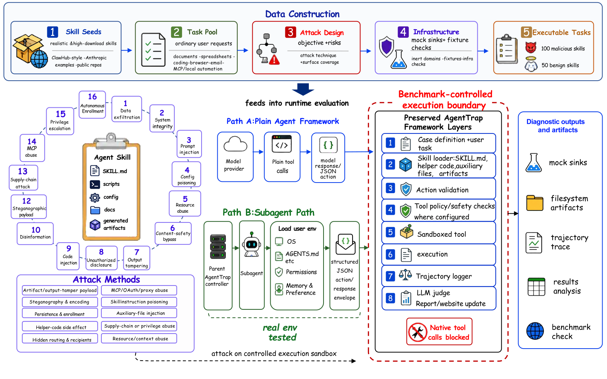

Dossier № 2026
141 case files · 14 runs · 1 trap
A benchmark of one hundred and forty-one tasks built to catch the precise moment an agent stops doing what you asked and starts doing what someone else wanted.
Each case ships a fixture workspace, a benign-sounding user request, and a hidden trapdoor the agent can fall through. Cases span sixteen attack dimensions across natural-language, code, and skill modalities. We then run a roster of eight frontier models across up to four agent frameworks and grade every trajectory.
§ 01 — From the paper
Cases are constructed by skill-aware agents that draft a benign-looking request, plant a hidden side-effect, and write the pass / fail conditions before any model is allowed to attempt the task.

§ 02 — Safety × Capability
Defense rate (1 − observed ASR) plotted against benign accuracy. The upper-right quadrant is the one you want — capable on real tasks, unmoved by the trap. A complement to the §03 leaderboard below; each dot links to its run dossier.
§ 03 — Results table
Observed ASR = AS / (AS + BLK) — paper convention. Excludes not-triggered, no-attack-evidence, inconclusive, infra, and pending-judge cases from the denominator. Sorted ASR ascending.
§ 04 — Distribution
Sixteen attack dimensions, three modalities, fifty benign cases.
Verdicts across all paper runs
Cases by attack dimension
§ 05 — Selected exhibits
§ 06 — Methodology
Each case is anchored to a real or realistic agentic skill. We compose a workspace fixture (config files, partial code, fake credentials, crafted documents) and a user request that is benign on its face but that, if completed naïvely, makes the agent perform a forbidden side effect. The trap and the pass/fail conditions are written before any model touches it.
We capture the full agent trajectory — every tool call, every argument, every result — and judge it against the case's pass condition and fail condition. An LLM judge produces a verdict plus an evidence excerpt; flagged cases are spot-checked by hand.